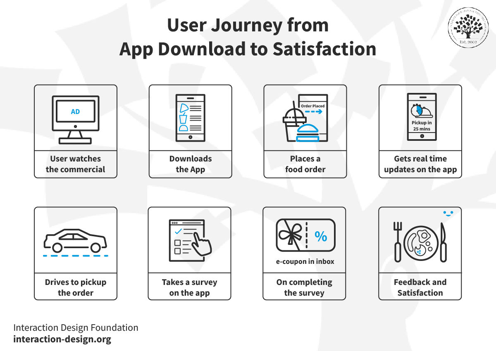

Making products and services usable and secure is critical in reducing
frustration and risk for users. Creating such solutions is best done when
usability and security are considered from the start, not “tacked on”
after a product is nearly ready to release. The purpose of this
assignment. Is to give you experience with the user experience design and
prototyping process with a security mindset.
Lab Requirements
This assignment should be done as a pair assignment (with 2 people),
though if there is an odd number 3 people can join together. The basic
steps are to find a partner, choose an activity that you can
observe/interview other people doing (to identify opportunities for
technical interventions), brainstorm possible technical solutions based on
your observations, create 2 low-fidelity prototypes of a technology to
help with the activity, evaluate risk and security controls to mitigate
them, and get feedback on your prototype from potential users. Details are
provided below. Note that all bolded text below will become part of your
write up that you turn in for the assignment.
Procedure
Choose a partner to work with to complete this lab. If there is an odd
number of students, please talk to the instructor. We suggest choosing a
partner that you do not know, but it’s up to you.
Choose an everyday activity that people around you accomplish regularly
with or without the use of technology. Write a 1-sentence description of
your activity. (e.g., “Ordering and receiving food at the Wilk food
court”). For this assignment you’ll want to choose an activity that
meets the following criteria:
It’s not too complicated (e.g., designing an airplane; filling out
your taxes) or too simple (e.g., crossing the street, looking out a
window). If there are several steps or related tasks involved, but
not dozens or hundreds then you’re probably good.
It’s common enough that you can find people around you (ideally who
are not just like you – i.e., Cyber majors, …) who you can observe
and interview about the activity.
There is some security-related component. This could relate to
physical security, personal data security, opportunities of
adversaries to manipulate results, etc.
If you can’t think of anything, check the list in Appendix 1 for
some inspiration.
Observe and interview at least 4 individuals (2 each) to identify user
needs. These people cannot be part of the class and shouldn’t be people
just like you (i.e., same major, ways of doing things…). The point is to
have empathy for others who may do things differently than you do. If
possible, observe them performing the activity that you are studying. If
needed, you can ask them to perform the activity with you watching, but
make sure they do what they would normally do, and don’t change what
they’re doing too much because of your observation. Take observational
notes on what you see including written notes and, if appropriate,
photos. Don’t video them, since then you won’t be forced to narrow your
focus to the key observations. After your observations (which may last
from 5-10 minutes per person), ask the person some questions about what
you observed and the activity in general. You should write up some of
the questions beforehand so you are prepared. The questions should help
you identify what is frustrating about the activity for them, what they
like about the activity, potential risks associated with the activity,
how the activity relates to the rest of their life, what technologies
they use to help them with the activity, and/or why they don’t use other
technologies. Take notes on how they respond to your questions.
Summarize your observations and interview notes in at least 4 key
“takeaway” messages that will help you remember the users’ perspective
in your future work.
Brainstorm technological “interventions” with your partner that could
help those you observed have a better user experience while performing
their activity. This should take into consideration the interviews and
observations. During the brainstorming phase there are no bad ideas!
Feel free to brainstorm with others as well, as there are never too many
people for brainstorming. List at least 12 different ideas from your
brainstorming activity. After brainstorming is complete, choose the idea
that you agree on as the best potential “intervention.” Describe the
core of your idea in a 2-3 sentence summary (e.g., “We will design a
mobile app that allows users to find and join Ultimate Frisbee pickup
games. It will include pickup game times, locations, and keep track of
who commits to come and actually shows up.”)
Identify 3 possible attacks on the system, one of which relates to
Confidentiality, on related to Integrity, and one related to
Availability. For each attack identify who a likely threat actor would
be (i.e., who would have reason to perform such an attack), why they
would want to attack, and how they would attack it. Then, for each
possible attack, identify at least one technique you will use to
minimize the risk of a successful attack.
Design a technological solution that is as usable and secure as
possible. Create a 6-8 frame storyboard (i.e., comic strip) of your
activity being completed using your technological intervention. You can
do this using online tools or, more likely, just hand-drawn. You should
have a sentence underneath each frame that conveys the core idea of the
particular frame. An example from Interaction Design Foundation is
included below:
Create 2 low-fidelity prototypes of a technological “interface” (e.g.,
mobile app, website, large-display, gesture-based interface, car
dashboard,…) that would be used in your technological “intervention.”
Paper prototypes are great, though if you get ambitious you could use a
low-fidelity prototyping tool such as Balsamiq or even Powerpoint. The
two interfaces should perform the exact same functionality, but do so in
a different way (i.e., one may have a drop-down menu, while the other
may list the items as buttons; one may be designed as a large display
mounted on the wall, while another would be for a mobile device).
Creating multiple prototypes allows you to keep your thinking from
getting too constrained by a single one and allows others to give more
meaningful feedback (see next bullet).
Get feedback on your 2 prototypes from at least 2 people. List at least
4 things they liked and 4 things they didn’t like about your prototypes.
List at least 2 ways you would improve one of your prototypes based on
that feedback. You do not need to actually make the improvements to the
designs, as that is beyond the scope of this lab.

Storyboard and prototype example (inspiration only).
Submission
Submit a Word or PDF document that includes the following information:
The 1-sentence description of the activity you chose in step 2 of the procedure.
The summarization of your observations and interview notes in 4 key “takeaway” messages that will help you remember the users’ perspective in your future work (step 3 of the procedure).
A list of your 12 different ideas from the brainstorming activity (step 4 of the procedure).
The core of your idea in a 2-3 sentence summary (step 4 of the procedure).
The 3 possible CIA attacks, threat actor, reason they would attack, and how they would attack, and one way you would minimize risk of successful attack (step 5 of the procedure).
A picture or screenshot of your storyboard (step 6 of the procedure).
A picture or screenshot of your 2 low-fidelity prototypes (step 7 of the procedure).
4 things users liked and 4 things they didn’t like about your prototypes (step 8 of the procedure).
2 ways in which you would improve your designs based on their feedback (step 8 of the procedure).
Appendix: Include images and notes you took during your observation and interviews.
Appendix 1: Activity Ideas
Ordering and receiving food at a restaurant
Parking on campus
Disseminating information about events (e.g., fliers with QR codes)
Managing physical access to high security areas
Organizing pickup sports games or social events
Voting for the best idea in a competition
Buying and selling items (e.g., Facebook Marketplace)